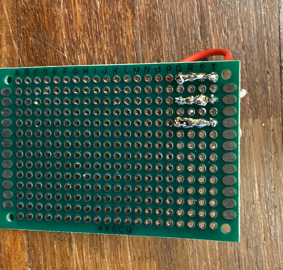
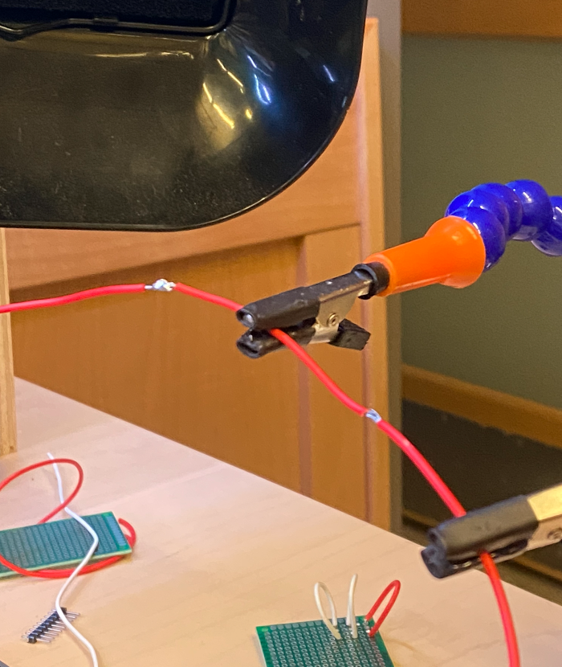
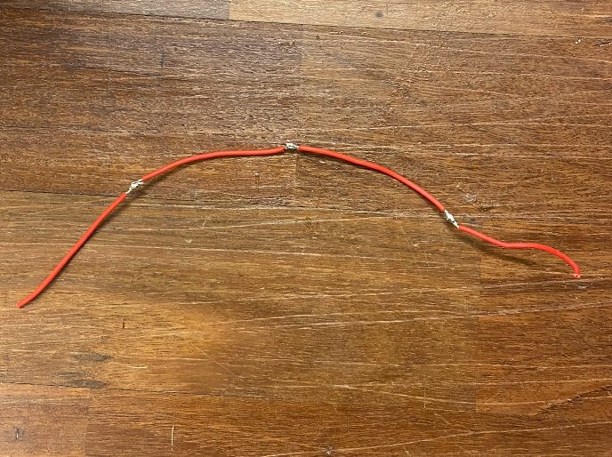

ATLS 3300 Lab 3: Soldering Basics
Lab Overview
This lab consisted of introductory exercises in soldering.
Materials Used
- Elegoo Uno R3 Controller Board
- USB Cable
- USB-C to USB-A Adapter
- Button
- Breadboard Jumper Wire
- Resistors
- LEDS
- Multimeter
- Protoboard
- Stranded and Solid-core Wires
- Soldering Iron
- Solder Wire (Lead-free, rosin core)
- Fume Extractor
- Brass Wire Pad
- Soldering Helping Hands
- Solder Sucker Desoldering Pump
- Solder Wick
- Wire Stripper
- Diagonal Pliers
- Safety Glasses
Part 1: Soldering Setup and Safety
To begin, I collected all the necessary tools and laid them out at my soldering station.

Soldering can potentially become dangerous if the right safety steps and precautions aren't taken.
I've listed these steps and precautions below.
- With the soldering iron resting in its stand, turn on the soldering unit and set it to a desired temperature
- To avoid burning yourself whilst using the soldering iron grab the rubber handle rather than the metal shaft
- Prior to melting any solder, turn on the fume extractor fan to preserve your lung health
- To protect yourself from loose droplets of molten solder, wear safety glasses
- Be sure to wash your hands post-solder to cleanse yourself of harmful chemicals
Part 2: Soldering Wires to Protoboard
To maximize the performance of your soldering iron, start by tinning and cleaning its tip.
This process involves melting a small amount of solder onto the tip of the iron, and rubbing it off in the brass wire pad.
Once complete, the soldering iron will be more receptive to melting new solder and will be easier to use.

The below image shows the result of soldering two solid-core wires and one stranded wire to a protoboard.

Part 3: Bridge of Solder
The next part of the lab required us to create three solder bridges. Solder bridges are achieved by incrementally melting solder blob by blob, between two points.
The result is a string of solder which facilitates the flow of electricity between two points on the protoboard.

Part 4: Splicing Wires
For the final part of this lab, we were tasked to connect four 2-inch pieces of stranded wire together with three splice joints, this is shown below.


Conclusion
I found this lab to be a helpful refresher on soldering. Solder can be a very temperamental material, working precisely with it requires practice,
which this lab provided.